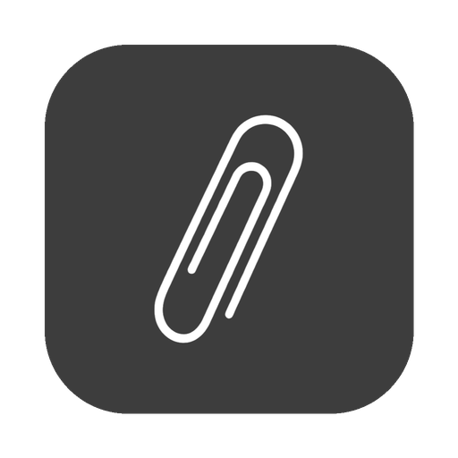

Slates needs its host
This native shell is installed correctly, but no Slates server URL was configured. The Schoology browser and AI services run on your trusted host, not directly on this phone.
SLATES_MOBILE_SERVER_URL=http://YOUR-MAC-IP:3000 npm run sync
- Start the portal with
npm run dev:mobile. - Keep the Slates server running on that same computer.
- Sync and rebuild the native project from
mobile/.